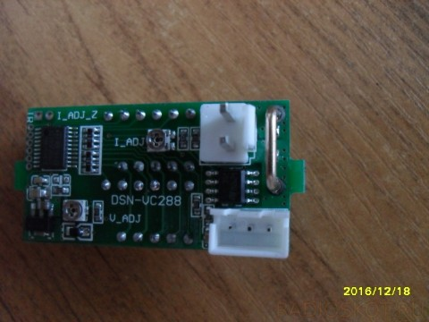
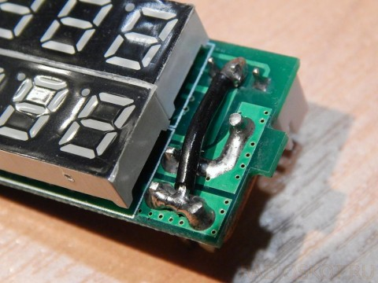
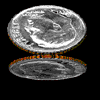

|
Внимание! Форум теперь только для чтения, продолжение на новом сайте Shemaforum.ru
|
DSN-VC288 Вольтамперметр
|
| | Пт, 07.04.2017, 18:14 | Сообщение # 1
|
Notturno0026
Постов: 11 Offline
ОК |
Пришел с АлиЭкспресс вот такой приборчик, пред покупкой читал про него в нете, в большинстве случаев положительные отзывы.
Но вот я столкнулся с его "неадекватностью", а именно:
С измерением тока проблемы, к примеру нагрузку (лампа накала 12В) в 1,7 Ампера, показывает почти 3 ампера. Подстроечный резистор для калибровки в пределах сотых...
Нагрузка в виде заряда мобильного телефона приближенно к правде до 1 ампера. Пробовал мелкую нагрузку в виде 50мА, с начало вообще не отображалось, потом покрутил подстроечный, вывел на эти же 50мА.
Думал до покупки о погрешности в сотые, а получается и в тысячные может врать ((
К слову, подал питания для индикаторов от того же трансформатора только через диод и сглаживающий кондер.
Очень странно, потому что у многих в обзорах он работает и ток показывает в полне адекватно. Что же у меня не так, может подключил не правильно? Хотя по схеме...
Напряжение более или менее нормально отображает, погрешность в пределах сотых...
Фото с интернета

|
| |
| | Пт, 07.04.2017, 19:11 | Сообщение # 2
|
ctc655
Постов: 2012 Offline
Друзья |
Я пока пользуюсь тремя подобными ампервольтметрами. Расположение разьемов немного другое. Запитываю от входного напряжения. Специально точность не проверял, но прикидывал. Больших отличий от тестеров( три разных использовал) не обнаружил. Ни по току, ни по напряжению. Может потому что питание нормальное? Если через один диод, то могут быть большие пульсации. Попробуйте запитать от батарейки и посмотрите что покажет.
|
| |
| | Пт, 07.04.2017, 20:03 | Сообщение # 3
|
Notturno0026
Постов: 11 Offline
ОК |
ЗАРАБОТАЛ, вот по рекомендации только что сделал, теперь все четко ))) Класс"
Нашёл отзыв на «али», как решать одну маленькую проблему связанную с этим прибором.
«Не верьте отзывам, здесь 99% отзывов пишут какие-то восторженные лохи. Вольтамперметр с проблемой (я покупаю второй раз) и это не невезение, и не дефект, а неправильно спроектированная плата. Все тут выставляют фотки вольтметра, а не знают что амперметр врет нелинейно и многократно. Короче, по-делу: лечится перемычкой (см. фото), потому что дорожка соединяющая «-» на разъемах имеет слишком большое сопротивление, из-за чего амперметр врёт в разы. Доставка в Москву 39 дней, отправил на 6-й день. Надеюсь мой отзыв был полезен. Всем удачных покупок!»

Отредактировал Notturno0026 - Пт, 07.04.2017, 20:04 |
| |
| | Сб, 08.04.2017, 09:00 | Сообщение # 4
|
Лекс59
Постов: 2319 Offline
Друзья |
Я пока использовал 2 штуки подобных. Выписал еще один. Оба запитаны отдельно. Показывают адекватно. Но я сам заранее на одном усиливал дорожки, на другом вынес шунт на плату (там это было целесообразно. Единственный минус для обоих - они сильно врут по току в начале шкалы. Более - менее адекватны миллиампер с 200. Ниже может показывать 0,04 А при токе 0,09. При токах порядка 60 ма может врать и втрое.
Обойти это не получится. Как я понимаю, это связано с нелинейностью операционника амперметра в начале шкалы. С этим придется смириться, либо ставить свои усилители на сигнал с шунта.
А метод примененый на снимке вполне интересен. И логичен. В третьем я сделаю так пожалуй.
Еще могу дать рекомендации по усовершенствованию. После того, как вынули плату из прибора, слегка укоротите уши, которыми он вставляется в прорези корпуса. Легче станет монтаж-демонтаж.
Еще одно. Со вставленной платой, корпус прибора не вставить в вырез под него в корпусе устройства.
Первое. Плату можно вставлять уже после монтажа в устройство. И есть способ и это обойти.
Когда вынули плату. Там есть по 2 уха с каждой стороны для фиксации в корпусе. Так вот ИЗНУТРИ надо срезать часть этого уха, треугольником, так, чтобы после вставления платы эти уши имели возможность сдвигаться внутрь, не упираясь в семисегментный индикатор. Да и саму величину выступа ушей можно несколько уменьшить.
Отредактировал Лекс59 - Сб, 08.04.2017, 09:12 |
| |
| | Сб, 08.04.2017, 09:03 | Сообщение # 5
|
ctc655
Постов: 2012 Offline
Друзья |
Значит надо свои внимательно поганять.
|
| |
| | Пт, 09.06.2017, 09:22 | Сообщение # 6
|
lwwn

Постов: 42 Offline
ОК |
Пока в ожидании такого приборчика с 50-а шунтом. Планирую для зарядного током макс 5-6 А. и питать от отдельного ДС-ДС. Шунт заказал из-за описанных погрешностей внутреннего шунта. Вопрос возник, стоит ли при этом удалять встроенный шунт? Ставить перемычку?
|
| |
| | Сб, 10.06.2017, 16:34 | Сообщение # 7
|
Лекс59
Постов: 2319 Offline
Друзья |
Шунт заказал из-за описанных погрешностей внутреннего шунта
Шунт вы заказали напрасно. Погрешности определяются не шунтом, а особенностями схемотехники измерения тока. Очень трудно точно измерять крохотное падение напряжения на шунте малого сопротивления при малых токах через него. Там и нелинейность операционника и шумы и прочая гадость. И чем меньше сопротивление шунта - тем сложнее будет измерять малые токи. Сам же шунт, если он выполнен из правильных материалов, ПОГРЕШНОСТИ НЕ ВЫЗЫВАЕТ. Никакой. Единственный случай, когда можно говорить именно о погрешности шунта - большой ток, когда происходит значительный его нагрев и изменяется сопротивление. Если меряете токи близкие к пределу шунта, более действенный способ - вынести его на плату устройства и хорошо припаять к достаточно массивным проводникам, чтобы улучшить охлаждение, а сам прибор можно соединить достаточно тонкими проводниками с ним. 50 амперный шунт вам будет полезен только в случае, если вам необходимо мерять токи 6-10 ампер с точностью до процента, но при этом токи до ампера будут врать безбожно.
Добавлено (10.06.2017, 16:34)
---------------------------------------------
В последнее время нередко натыкаюсь на подобный вопрос. О недостоверности показаний амперметра в начале шкалы. Я лично минимум в третий раз отвечаю. Поднадоело. Поэтому (пока Муза не ушла) дам подробнее. Для всех желающих понять поглубже.
Пределы нашего прибора 10 миллиампер - 10 ампер. Сопротивление шунта (в том, который выпаивал и мерил) 0,05 ома. Т.е. прибору приходится измерять напряжения на шунте в диапазоне от 0,00005 вольта до 0,5 вольта (от 50 микровольт до 500 милливольт).
Мне не известен ни один бюджетный усилитель, который способен сохранить абсолютную линейность в таком диапазоне сигнала. А внутри нашего приборчика установлен простенький операционник в токовой части. Почему простенький? А вы погуглите стоимость крутых операционников. В разы дороже этого приборчика в сборе. Купите?
Включите свой тестер в режим измерения самого малого напряжения. Там ноль на дисплее? Или не всегда? А если руками взяться за щупы?
У меня доходит до 6 милливольт (в 120 раз больше, чем должен измерять наш амперметр). И как амперметру измерять столь малые величины на фоне таких помех?
Рассматриваемый прибор работает рядом с мощными источниками помех и наводок. Стоит ли ждать от него чудес в диапазоне малых токов?
Китайцы замастырили великолепный прибор в своем ценовом диапазоне. Я от него балдю. При этом прекрасно осознавая, что физика есть физика, ее обойти невозможно.
Теперь про нагрев шунта. При 10 амперах на шунте рассеивается 10х0,5 вольта=5 ватт. На маленькой проволочке. Естественно она греется и сильно. Это неприятно, но если она выполнена из манганина, то изменение сопротивления ее очень мало. Но чтобы не поплавился припой, тепло лучше отводить. Например перенести его на плату с большими полигонами и толстым слоем припоя. Можно припаять к паре пластин меди и снимать сигнал с них. Соединить с измерительной схемой можно уже будет тонким проводом.
Ну или сделать более массивный шунт. Я, например в не очень ответственных конструкциях не парюсь и выполняю шунты из толстой канцелярской скрепки. Если нужно, то две-три параллельно. Но если ток в 20-50 ампер - там уже медь.
Измерение малых сопротивлений при подборе шунта.
Беру заготовку под шунт заведомо длиннее, подготавливаю один конец ( к пайке или болтовому соединению). От регулируемого БП наш шунт, через нагрузку (лампочку, например) с образцовым амперметром устанавливаю ток, скажем 0,1 ампера. Включаю тестер на максимальной чеувствительности. Один щуп на подготовленный конец шунта, другим веду вдоль шунта до получения нужного значения. Для нужного сопротивления скажем в 0,1 ома это будет 10 милливольт. При токе в 1 ампер, соответственно 100 милливольт. Отметил, припуск на крепление. Шунт готов.
Отредактировал Лекс59 - Сб, 10.06.2017, 17:36 |
| |
| | Пн, 12.06.2017, 22:33 | Сообщение # 8
|
lwwn
Постов: 42 Offline
ОК |
Лекс59,
Цитата Шунт вы заказали напрасно.
Спасибо за ответ.
Цитата на одном усиливал дорожки
Если не затруднит, как? Предполагаю, в начале заряда мощность на шунте будет близка к описанными Вами 5 Вт. Сорри, но я немного не по цьому дилу. Спасибо.
|
| |
| | Вт, 13.06.2017, 06:36 | Сообщение # 9
|
Лекс59
Постов: 2319 Offline
Друзья |
Просто напаивал сверху кусок провода. А если стоит задача усилить теплоотвод, то лучше массивным медным проводом, допустим 1 мм диаметром, он заодно будет распределять тепло по плате. Правда не везде это возможно, в смысле хватает места.
Был в моей практике такой случай. Рядом с шунтом (провод буквой П) Припаивал параллельно ему пару медных пластин. Поскольку на обратной стороне платы разместить не мог, сквозь плату пропускал кусок провода диаметром около 1,5 мм в качестве теплопровода. Получилось правда некрасиво совсем - пожег плату нафик, пока запаялся.
Если долго меряете большие токи, пожалуй целесообразно вынести шунт. Правда с нашим прибором это тоже не всегда так уж просто, он бывает достаточно туго вставлен.
А 50 амперный может и ничего, но уж больно он здоровый. Но тут вам виднее. |
| |
| | Вт, 13.06.2017, 10:00 | Сообщение # 10
|
lwwn
Постов: 42 Offline
ОК |
Лекс59,
Цитата Если долго меряете большие токи, пожалуй целесообразно вынести шунт.
Последний раз заряжал АКБ, часа четыре падал ток с 5.5 до 1 А. Из всей ветки понял: шунт внешний (если есть внутренний, его удалить т.к. врань из-за разных материалов, температур, сопротивлений неизбежна), перемычка нужна. Правильно? И ещё детский вопрос, зажимы в ДС конвертере винтовые, как лучше провода к ним - лудить или просто скрутить?

|
|
Внимание! Форум теперь только для чтения, продолжение на новом сайте Shemaforum.ru
|
|